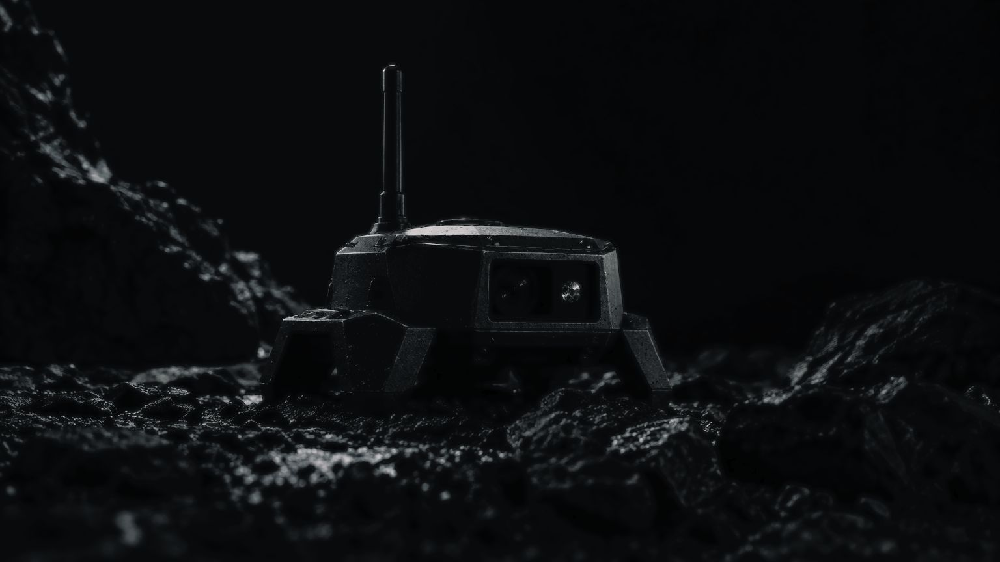
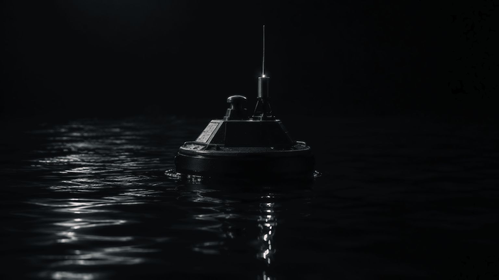

ECHO
Know what’s happening around you
A single signal provides a limited view of a situation.
More information emerges when observations from different sensors, neighboring nodes, and earlier periods are compared. ECHO preserves this history and assesses event reliability.


Land, air, and sea
Three environments, one approachTRACE uses acoustic, seismic, and optical sensors; SEA uses hydroacoustic and optical sensors; SKY uses passive sensors at multiple locations.
Observation, communications, and analysis
What happens to the dataCapabilities
Individual sensors. One shared pictureRecognition results include a confidence level. Observation quality is taken into account in analysis.
Readings from different sensors and neighboring nodes complement each other and refine the picture.
Observations accumulate over time. New signals are compared with earlier ones.
A shared registry shows the network’s composition, device availability, and technical alerts.
Request a presentation
Tell us about your task — we will prepare materials for your use case. Details are shared after a non-disclosure agreement.
We reply within two business days.